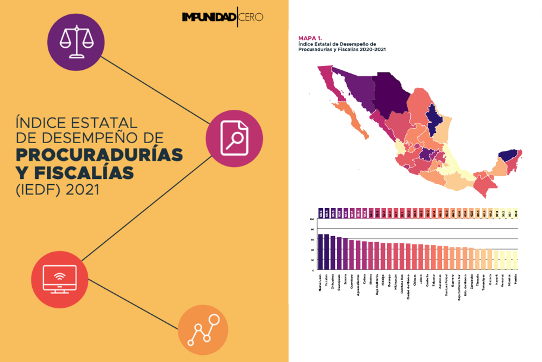
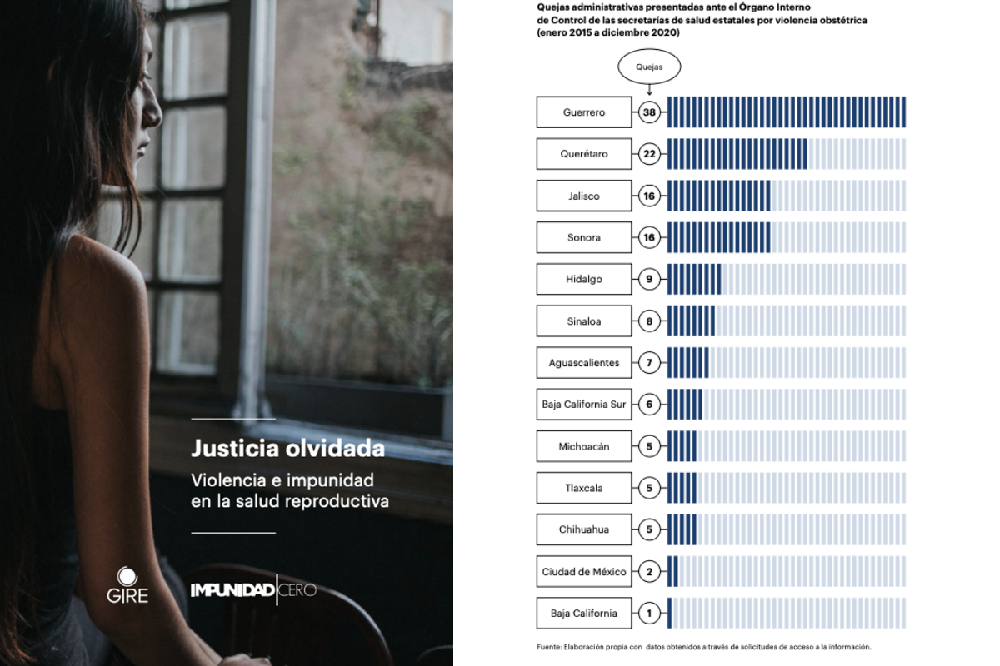
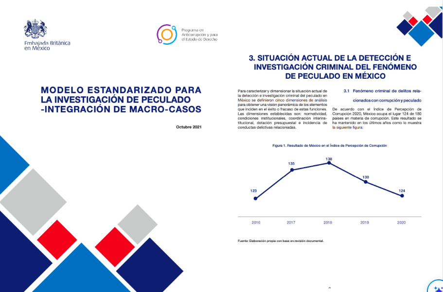
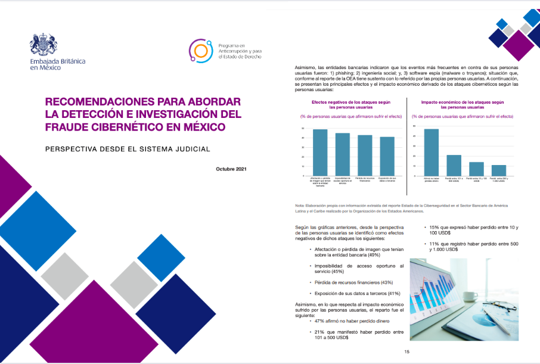
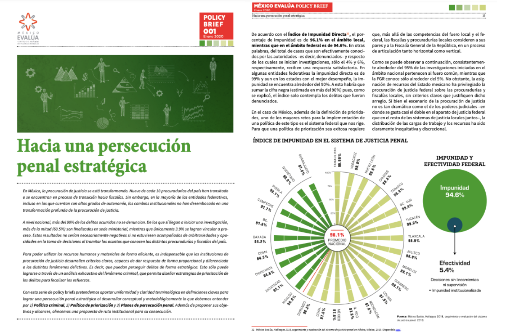
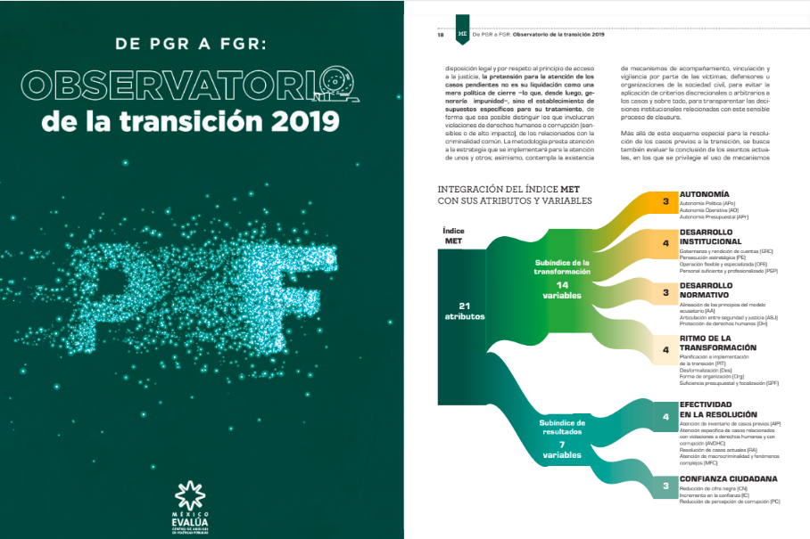
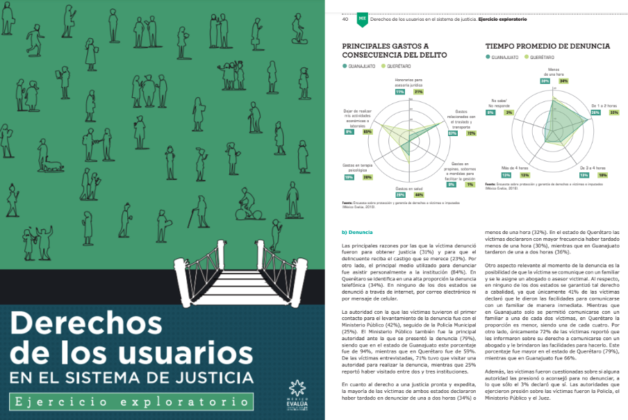
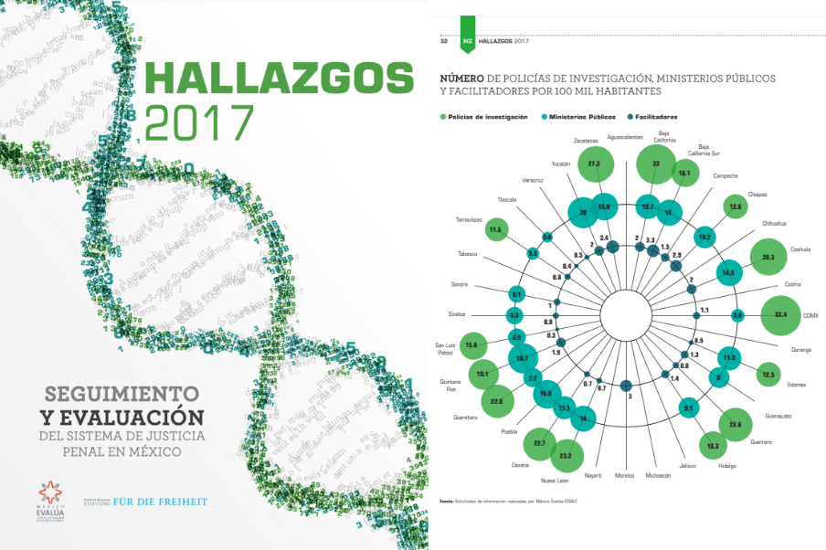
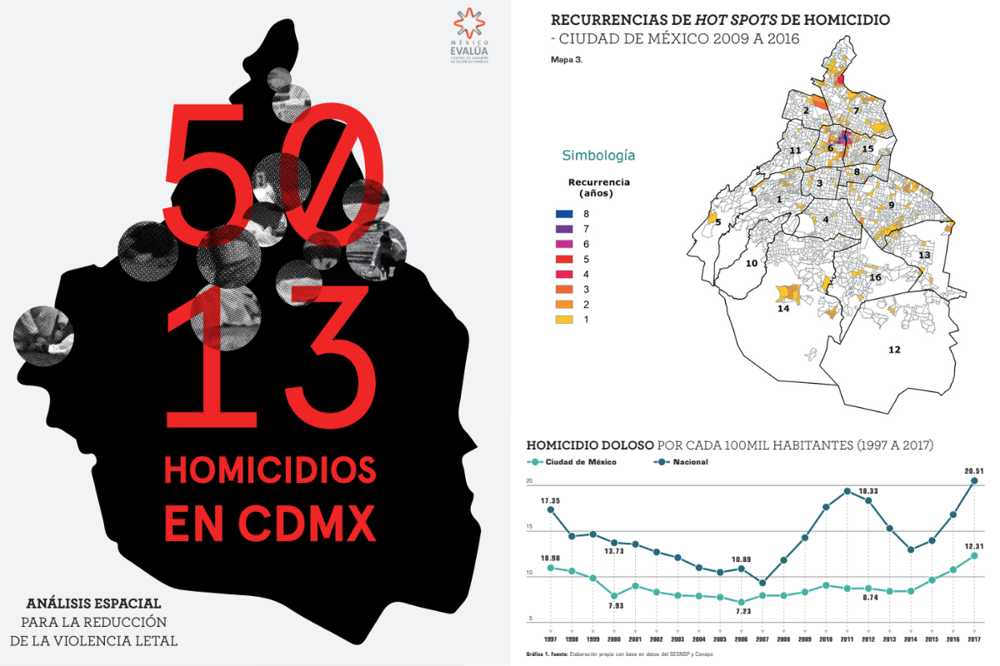

Monserrat López
Economist and Data Analyst
Other Projects
Performance Index of the Prosecutor's Offices, Impunidad Cero 2021

Read Article
Best Practices on Digital Whistleblower Platforms in Mexico, Impunidad Cero 2022
View Project
Forgotten Justice: Reproductive Health Impunity, Impunidad Cero and GIRE 2022

View Project
Standardized Investigation Model for Intentional Embezzlement, British Embassy in México 2021

View Project
Standardized Model for Investigating Intentional Homicide, British Embassy in México 2021
View Project
Recommendations for Addressing Cyber Fraud Detection and Investigation in Mexico, British Embassy in México 2021

View Project
Policy Brief: Towards a Strategic Criminal Prosecution, México Evalúa 2020

View Project
Mexican Attorney General's Office Transition Observatory, México Evalúa 2019

View Project
Users' Rights in the Criminal Justice System in Mexico, México Evalúa 2018

View Project
Monitoring and Evaluation of Mexico's Criminal Justice System, México Evalúa 2018

View Project
5,013 Murders in Mexico City, México Evalúa 2018

View Project